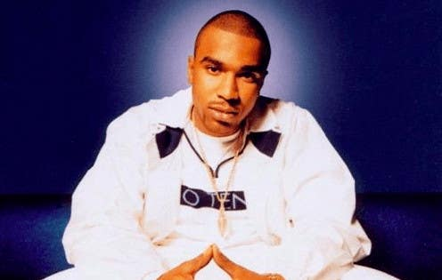
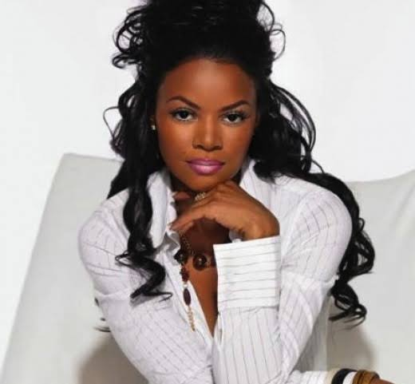

Carmen Bryan Files Civil Lawsuit Against N.O.R.E. Over Alleged 1999 Incident
Music | Hip-Hop / Legal
Published: Wednesday, September 9, 2026

NEW YORK — More than 25 years after an alleged encounter at a New York City nightclub, Carmen Bryan has filed a civil lawsuit against rapper N.O.R.E., accusing him of sexually assaulting her in 1999.
Bryan, a former music-industry executive and entrepreneur who shares a daughter with rapper Nas, filed the complaint in New York on Wednesday, Sept. 9. She is pursuing financial damages connected to what she describes as lasting emotional and psychological harm.
The lawsuit centers on an alleged incident that Bryan says occurred at a Manhattan nightclub in May 1999. At the time, N.O.R.E. was promoting his second studio album, Melvin Flynt – Da Hustler.
Bryan alleges that N.O.R.E., whose legal name is Victor James Santiago Jr., approached her inside the crowded club. She claims he was visibly intoxicated and sexually assaulted her despite her attempts to make him stop.

According to the complaint, people nearby eventually intervened. Bryan says the encounter left her extremely upset and that she exited the club crying.
The lawsuit further alleges that Santiago followed her outside. Bryan claims that he initially did not recognize her but later realized she was connected to Nas and apologized.
She alleges that another apology came several weeks later at a gathering involving Nas and their daughter.
Alleged conversation with Jay-Z
The lawsuit also describes Bryan’s account of what happened after the alleged incident.
Bryan says she told Jay-Z about the encounter the following day. She characterizes him as someone she trusted and alleges that he became angry and considered confronting Santiago.
Bryan says she ultimately asked him not to intervene because she was concerned that doing so could make the situation worse.
Jay-Z is not being sued in the case and has not been accused of participating in the alleged assault.
A decision decades later
Bryan says she chose not to pursue a criminal or civil case at the time. Her lawsuit attributes that decision partly to the atmosphere surrounding women in the music industry during the 1990s.
She claims the experience remained largely unaddressed for years.
According to the complaint, media coverage surrounding allegations brought by Cassie Ventura against Sean “Diddy” Combs in 2023 caused Bryan to revisit her own experience. She alleges that memories of the incident returned and that she experienced emotional difficulties afterward.
Bryan subsequently began pursuing legal options.
Her lawsuit relies on New York City’s Victims of Gender-Motivated Violence Protection Act, a law that can allow survivors of certain alleged acts of gender-motivated violence to bring civil claims.
N.O.R.E. response
As of the latest reports, N.O.R.E.’s representatives had not publicly responded to requests for comment from media outlets covering the lawsuit.
Bryan’s attorneys, Marjorie Mesidor and Heather Palmore, said their client wants accountability and argued that women should not be expected to accept unwanted sexual contact as part of working or socializing within the entertainment industry.
The lawsuit seeks compensatory damages along with damages related to emotional distress and mental anguish.
No court has determined that N.O.R.E. committed the alleged acts, and the lawsuit’s claims remain unproven allegations at this stage. Santiago will have an opportunity to respond as the case proceeds.